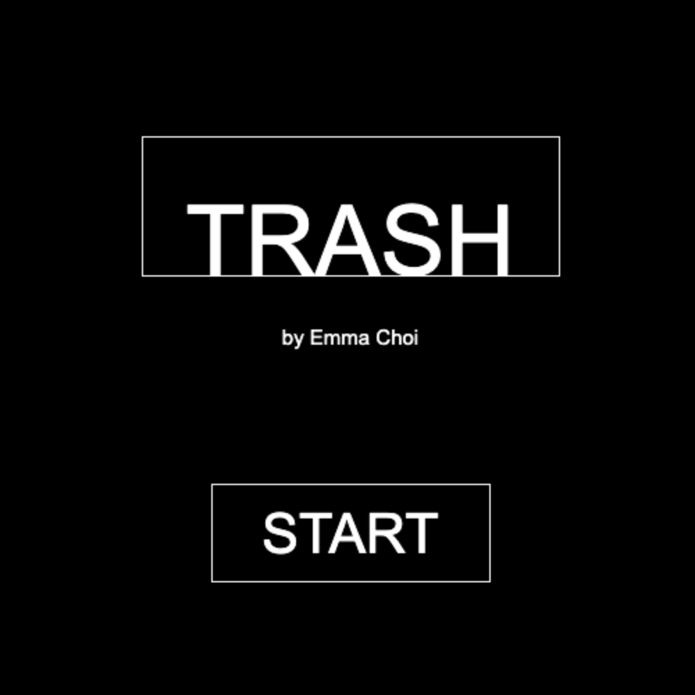

trash
I made this game in a "coding for designers" class. The class was primarily focused on learning how to code, particularly in Processing. This final project is the culmination of what we learned in class, while providing some message of our choosing. My game, "Trash," focused on, well, trash, but more specifically, the effect of waste on the environment.
The assets of the game are photographs I took myself and small illustrations I made in Adobe Photoshop. Overall, I think the game is a decent representation of what I learned from the class. However, I think it was a pretty safe project, and I could have gone further with it. The message as well is somewhat generic, and I think I could have put more emphasis on how much waste is produced not by consumers, but by companies.
Processing, Adobe Photoshop; March 2020